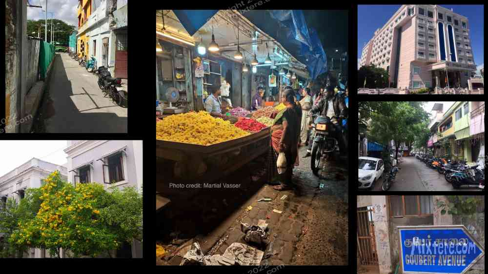
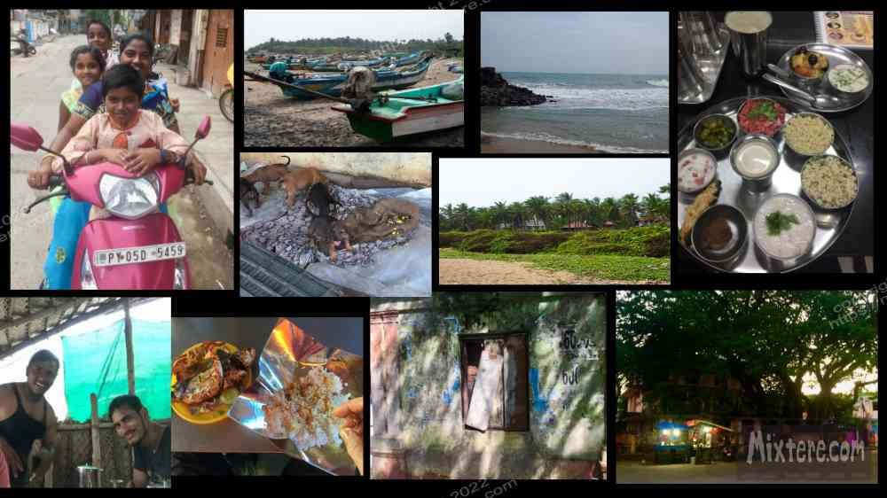

Eventually I was on the train headed for Pondicherry, an old French colonial city about eleven hours (I think) south via train. Only recently I spoke with a man in Alleppey, Kerala that swore that Pondicherry is not in Tamil Nadu but is its own sort of district. If that is the case it is in the middle of Tamil Nadu, at least, on the South Eastern coast. At the time I didn’t know that there are old colonial remnants in India that are not British. My ignorant self now gathers that there are Portuguese colonial areas (such as Goa) as well as old french colonies like Pondicherry/Puducherry. There are likely others too. This top photo was shot by Martial Vasser, not me.
Pondicherry felt like a big city after Puri. It was also a lot more on the established tourist track. Upon arriving I learned that many (predominantly German and French) westerners were actually living instead of just visiting there. I think a large swath of these people are centered around Auroville, a sort of utopian community just north of Puducherry. I stayed just outside of it for a few nights. Everyone except me seemed to love Auroville. I found it rather preachy, similar to hippie areas like Santa Cruz, California. I found the people in love with Auroville to have the same asphyxiating judgmental approach to life and “right living." Ideals that are very hard to live up to. The way people around Pondicherry gushed about Auroville- it smacked of cult-like brainwashing to me. Having said this, I believe there were positive aspects of Auroville. Apparently the community had managed to transform the area around from desertification back to a healthy, thriving jungle.
One day, when I shopped at a grocery just outside of Auroville, a local woman began begging that I give her money. Instead of this I brought her over to the grocery to pick up some essentials. This turned out to be an error. The lady complained, unsatisfied with what I got her, and continually asked me for more. This sort of thing happens a lot around Kovalam too. I can only conclude that a sort of culture that is overly reliant on tourist efforts to care for Indian matters develops around these places precisely because there is a steady supply of Western meddling. In these scenarios an unhealthy, unsavory dependence develops which does the opposite of empowering both parties. It's a complicated situation, one I am not sure of the solution to. Western countries possess an advantage on the global playing field and much of this is due to chains of events... and chains period. How can the same party (a former colonial and world power), the very power that subjugated, discriminated, terrorized and even enslaved a people, be the same one to empower it later down the road? Yet this is what these many of these powers, US included, are trying to do.
Back to my story- My airbnb outside Auroville was not cheap. Sensing my anxiety at the cost, my host let me know of a cheaper option. This was a “backpacker hostel” for Indians that was closer to the city. I went and stayed there about two weeks. It was pretty awkward being an older American in a hostel housing young Indians who rarely spoke English. Still, they welcomed me and even offered food from their little kitchen. One day, when I attempted to cook and used the pressure cooker, I almost caused an explosion. The nosy old man that seemed to live at the hostel gave me a hard time. I didn't cook much after that. I walked the city, dodged dogs and traffic (an art in India) and cruised the beaches. At Auroville Beach I walked into Kallilay surf school, chatted with Juan, one of the owners, and ended up renting a surfboard. I went surfing a few times at Auroville beach- my first rides in India. It was nice and comforting to be able to swim n the ocean and to surf the little waves. The water quality was suspect though and I would not recommend dipping your head in that water.
One day at a restaurant I befriended Martial, a visiting French blacksmith. He was exploring the style of blacksmith craft practiced in Tamil Nadu. Martial was also seeking Ayurvedic health treatments for an old motorcycle injury. He took me to this raw food shop in Pondicherry called Earth Home. This place leaned more toward the hardcore health food shops that I remembered from my youth. The place smelled similarly yeasty and carried similar natural products with an emphasis on plant and spiritual medicine and the downright esoteric. There were products in there that seemed to promise a miraculous cure to everything. I would not normally have returned to Earth Home so much but I was starved for fresh fruit and vegetables. I had been dutifully following my “no uncooked vegetable” rule. This limited my diet and health via a lot of fried things- rice and white flour, sugary foods, lots of oil.
